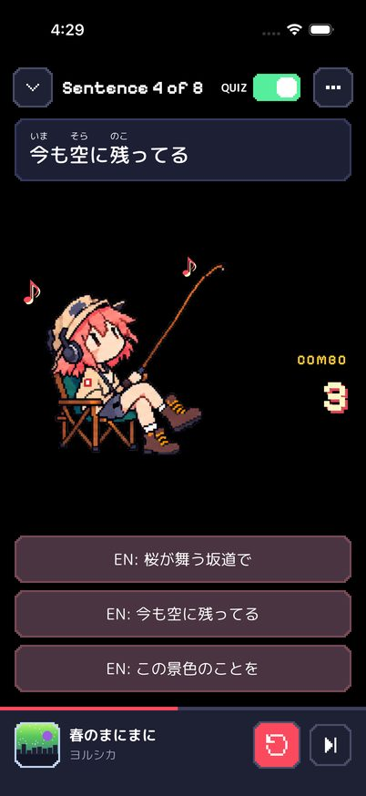
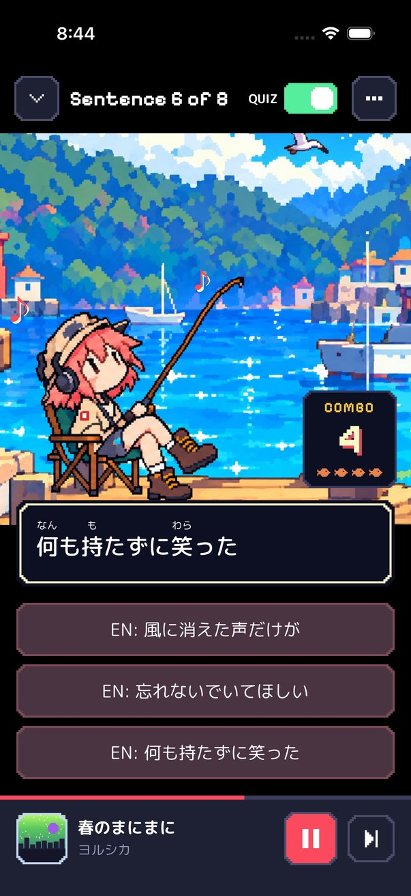
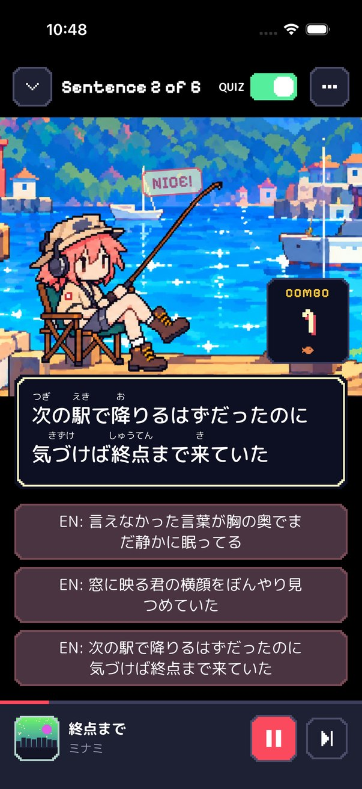
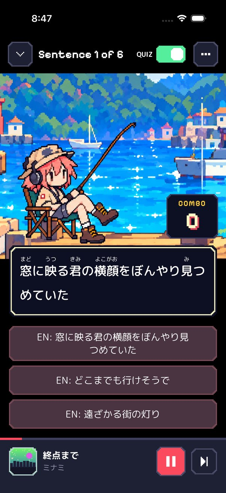
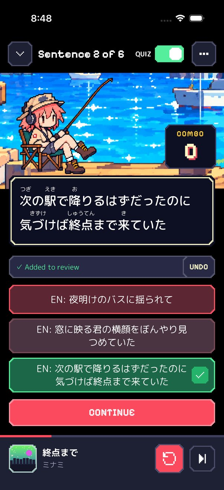
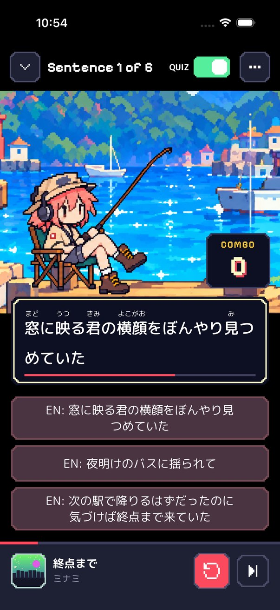
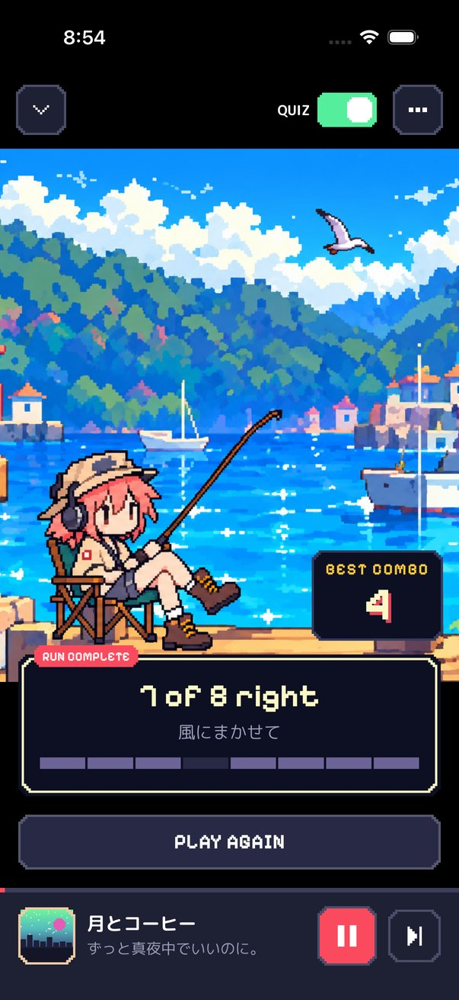
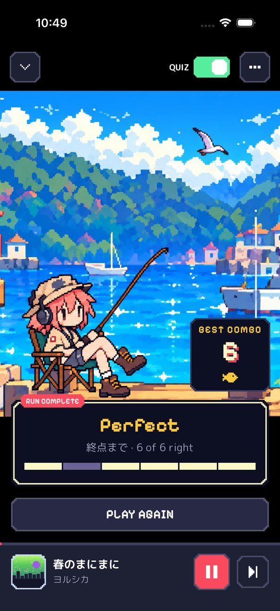
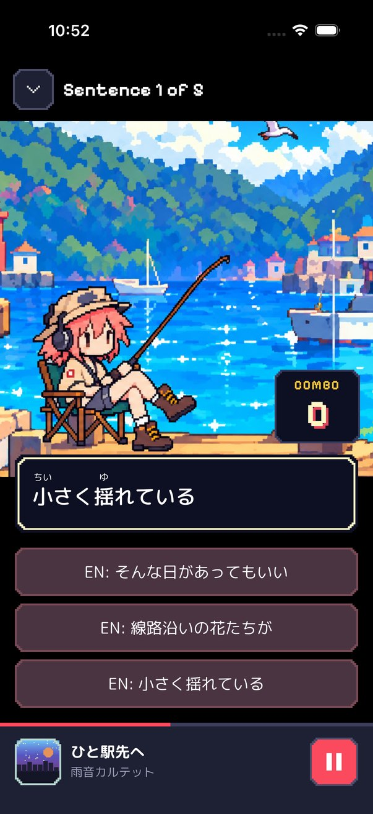
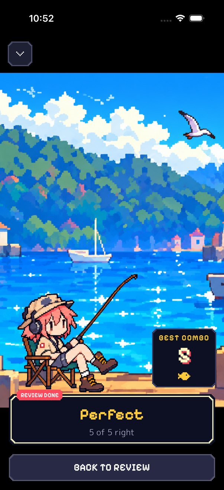

The dock idea from round 10, built with your notes. The red answer buttons and the top bar are unchanged, and
there's no artist tag over the lyrics. All screenshots are from the simulator, with the test songs swapped for
silent audio.
Quiz
She fishes from the Home harbor. The art stays anchored to the bottom, so a longer sentence crops sky, never
her.
The sentence sits in a cream-bordered box over the dock.
The combo and its fish sit on a dark panel, so they stay readable on the water and the sandy posts. Fish are
orange koi, up to five.

Before (PR #20)

After, combo of 4: headbang, notes, fish

NICE! fading out as the next sentence starts
Longer lyrics
Two-line lyrics and two-line answers fit, and so does a miss with the review toast and CONTINUE. The stage
shrinks first, and the sentence only scrolls once the stage reaches its minimum height. The answer timer now
drains inside the box.

Lyric wraps to two linesMiss, before

Miss, after

Answer time 5s, bar draining
End of a song
The next song still starts on its own. Its intro shows the finished song's score in the box, plus its fog
tiles.
The panel shows the best combo, with a gold koi for a perfect run. A perfect run reads "Perfect".
PLAY AGAIN replays the finished song. The summary goes away when the next song's first sentence arrives, or
when any other song starts.
In listen mode the small card is unchanged except that it now says "Perfect".

7 of 8 right

Perfect, with the gold koi
Review quiz
The Review quiz uses the same scene. Its end screen used to be a bare "All done for now" label. It now scores
the session in the box, like the end of a song.

Review quiz

Review finished
Left alone
Listen mode. A stage there would push lyrics off screen, and listen mode is mostly reading.
Home. It already had the harbor, and the review card already overlaps the dock.
The end-of-song panel doesn't pause the music, because music should keep flowing. The mockup's paused screen
would mean stopping playback at the end of every song.